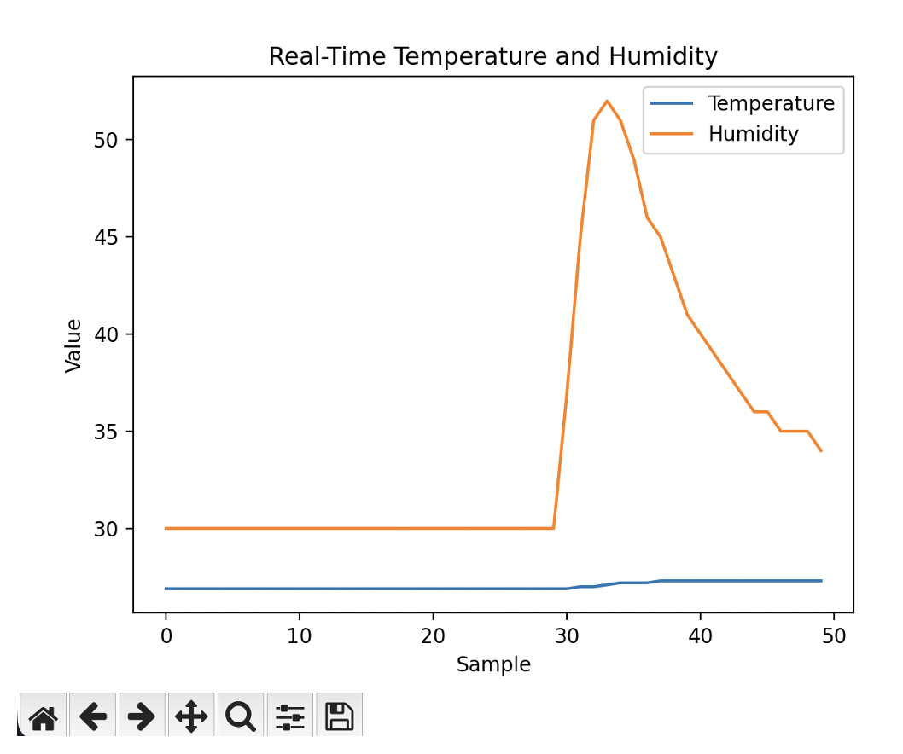
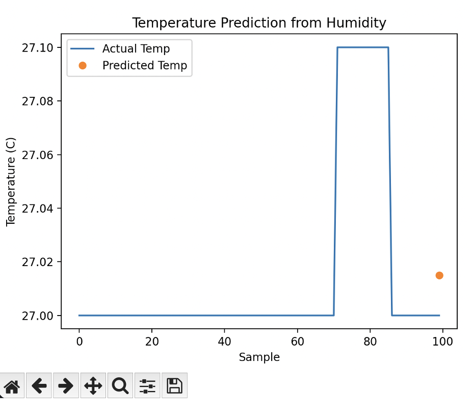

VS Code App - Analyze and Predict Temperature & Humidity
This section details the engineering of a real-time embedded system integrating ESP32 and environmental sensors for continuous data acquisition, development of a cross-platform data pipeline for live sensor streaming and analysis, and the design of interactive visualization tools and machine learning models for predictive analysis of environmental data.

Figure 1: Data analysis and visualization of temperature and humidity trends using Python libraries.

Figure 2: Predictive analysis of future temperature and humidity values using a linear regression model.